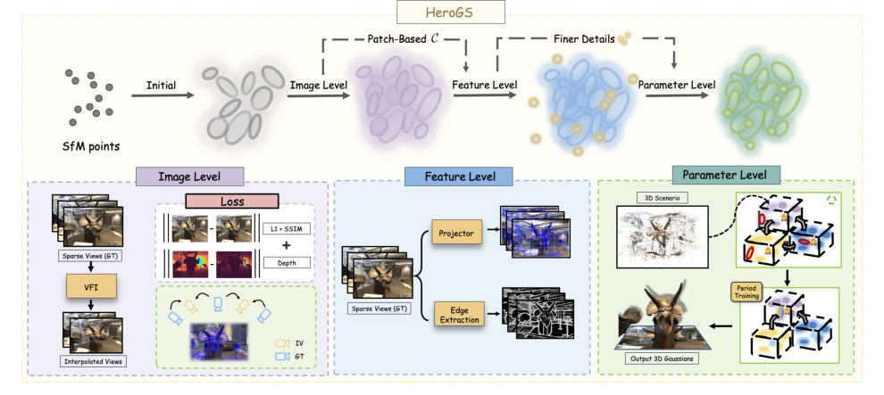
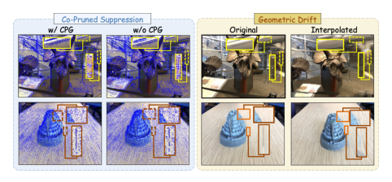
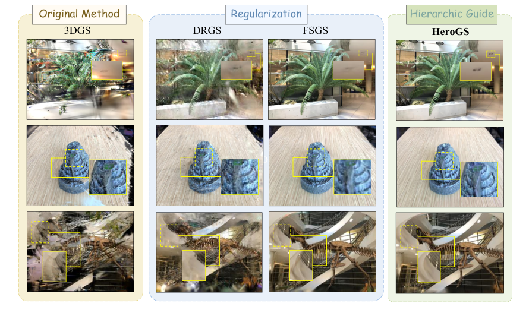
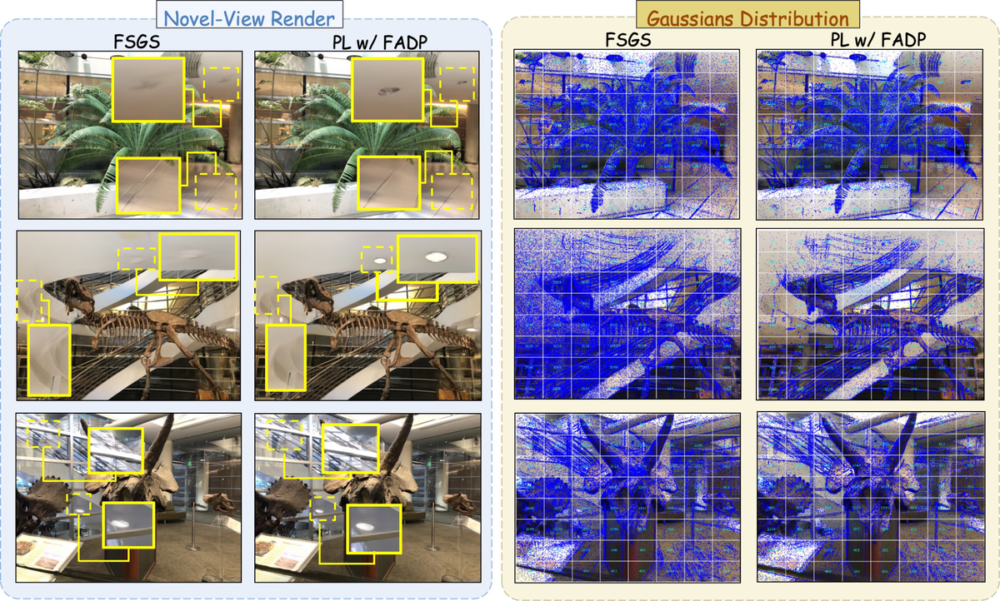
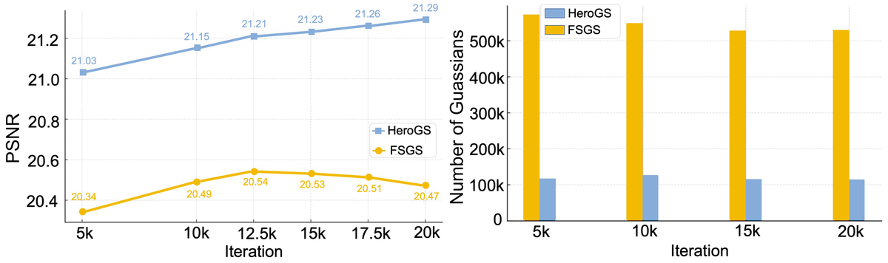

HeroGS
简单摘要
为了解决这个问题，我们提出了 HeroGS——鲁棒 3D 高斯分布的分层指导——一个统一的框架，在图像、特征和参数级别上建立分层指导。重建高保真 3D 场景以实现逼真的新颖视图合成仍然是计算机视觉领域的核心挑战。

重建高保真 3D 场景以实现逼真的新颖视图合成仍然是计算机视觉领域的核心挑战。在这种情况下，视点的稀缺通常会导致不规则的高斯分布，从而导致几何模糊和严重的渲染伪影。
核心创新
论文真正新增的设计，首先体现在 3D 高斯溅射 (3DGS) 最近成为新颖视图合成中一种很有前景的方法，将照片级真实感渲染与实时效率相结合。这一步不是换个说法重复问题定义，而是直接改动了方法主线的切入点。
进一步看，为了解决这个问题，我们提出了 HeroGS——鲁棒 3D 高斯分布的分层指导——一个统一的框架，可以跨图像、特征和参数级别建立分层指导。作者这样安排，是为了让前面的表示、约束或训练信号继续影响后面的求解链路。
进一步看，为了缓解这一限制，我们提出了 HeroGS，这是一个统一的多级（图像、特征和参数）指导框架，它提供多样化和互补的监督信号，以在整个训练过程中细化和规范高斯场。作者这样安排，是为了让前面的表示、约束或训练信号继续影响后面的求解链路。
进一步看，在图像层面，HeroGS引入了伪监督，为不同地区的高斯人提供全面的指导。作者这样安排，是为了让前面的表示、约束或训练信号继续影响后面的求解链路。
进一步看，由于观察到更密集的输入会产生更好的重建，我们建议在相邻训练视图之间生成中间视点，并使用帧插值模型将其相应的 RGB 图像合成为伪标签。作者这样安排，是为了让前面的表示、约束或训练信号继续影响后面的求解链路。
技术细节
由于观察到更密集的输入会产生更好的重建，我们建议在相邻训练视图之间生成中间视点，并将其相应的 RGB 图像合成为。与 类似，我们的训练目标集成了对生成图像的光度监督（通过 L1 和 D-SSIM 损失测量）以及对渲染深度图的几何监督。本质上，前一阶段获得的全局细化高斯分布提供了更完整的结构基础。
CPG 包含两个辅助高斯场，它们与主场联合训练。这些级别形成具有互连（虚线）的分层指导，共同约束和优化高斯场，以提高结构保真度，消除不一致的高斯。与没有 CPG 的情况相比，全流程生成的新颖视图渲染。这一步的作用，是把当前结果继续传给后面的模块或训练目标。
3 方法
为了缓解这一限制，我们提出了 HeroGS，这是一个统一的多级（图像、特征和参数）指导框架，它提供多样化和互补的监督信号来细化和正则化高斯。这种增强的监督丰富了梯度传播，导致更加全局一致和结构良好的高斯场。作者这样设计，是为了把这一节的输入、约束和输出关系讲清楚。

3.1 图像级别
由于观察到更密集的输入会产生更好的重建，我们建议在相邻训练视图之间生成中间视点，并将其相应的 RGB 图像合成为。在训练阶段，从生成的视点渲染场景，并通过将结果与伪标记图像进行比较来应用监督。与 类似，我们的训练目标集成了对生成图像的光度监督（通过 L1 和 D-SSIM 损失测量）以及对渲染深度图的几何监督。作者这样设计，是为了把这一节的输入、约束和输出关系讲清楚。
$$ \mathbf{I}^{(\alpha)}_{n} = \mathrm{VFI}\big(\mathbf{I}_{n}, \mathbf{I}_{n+1},\alpha \big). $$
这条式子是在定义一个可直接计算的中间量：右侧把相对位置、方向、权重或比例关系组合起来，左侧则把这个组合结果记成后续模块要反复使用的变量。
$$ \begin{split} \mathbf{R}^{(\alpha)}_n & = \mathrm{slerp}(\mathbf{R}_{n}, \mathbf{R}_{n+1}, \alpha), \\ \mathbf{T}^{(\alpha)}_n & = (1 - \alpha) \mathbf{T}_{n} + \alpha \mathbf{T}_{n+1}. \end{split} $$
放在“方法”这一部分看，这条式子重点不是孤立地罗列符号，而是交代 R ( alpha) n 如何承接前面的输入并把结果交给后续步骤。
$$ \hat{\mathbf{D}}_{n}^{(\alpha)} = \sum_{i=1}^{L} d_i o_i \prod_{j=1}^{i-1}(1-o_j). $$
放在“方法”这一部分看。这条式子描述了多个分量的聚合或逐步合成过程。它通常表示模型如何把局部贡献、概率权重或多项损失累积成最终结果。
3.2 功能级别
虽然伪标签提供了有价值的全局监督，但它们在细节上的精度有限，使得很难准确地约束高频几何结构（图 1）。为了解决这个问题并增强几何细节，引入了特征自适应致密化和修剪（FADP）。本质上，前一阶段获得的全局细化高斯分布提供了更完整的结构基础。
基于边缘的致密化侧重于在对象边界附近添加高频细节，而基于补丁的控制可确保此类添加不会导致其他地方局部过度集中或稀疏。这种协同作用可以实现有效的几何细化，而不会破坏场景的全局空间连贯性。
$$ \hat{\mathbf{A}} = \frac{\sum_{k=1}^{K} w_{k} \cdot \mathbf{A}_{k}}{\sum_{k=1}^{K} w_{k}}, \quad w_{k} = \frac{1}{d_{k} + \epsilon}, $$
放在“方法”这一部分看，它重点在定义或约束 A 这一项。这条式子描述了多个分量的聚合或逐步合成过程。它通常表示模型如何把局部贡献、概率权重或多项损失累积成最终结果。
$$ \mathcal{C'} arrow \text{round}( \mathcal{C'} \cdot \frac{\sum_i c_i}{\sum_i c_i'} ). $$
放在“方法”这一部分看，它重点在定义或约束 arrow 这一项。这条式子描述了多个分量的聚合或逐步合成过程。它通常表示模型如何把局部贡献、概率权重或多项损失累积成最终结果。
3.3 参数级别
CPG 包含两个辅助高斯场，它们与主场联合训练。为了促进更有效的共同剪枝，辅助高斯场的参数在预定义的训练迭代之后被冻结。通过比较所有三个字段中相应高斯的一致性，我们通过全面的联合剪枝策略识别并删除不一致的点。作者这样设计，是为了把这一节的输入、约束和输出关系讲清楚。
$$ z^* = \arg\min_z \| \mathbf{p}_y^s - \mathbf{p}_z^t \|_2, $$
放在“方法”这一部分看，它重点在定义或约束 z * 这一项。这条式子是在定义一个可直接计算的中间量：右侧把相对位置、方向、权重或比例关系组合起来，左侧则把这个组合结果记成后续模块要反复使用的变量。
$$ w_y = \| \mathbf{p}_y^s - \mathbf{p}_{z^*}^t \|_2. $$
放在“方法”这一部分看，它重点在定义或约束 w y 这一项。这条式子是在定义一个可直接计算的中间量：右侧把相对位置、方向、权重或比例关系组合起来，左侧则把这个组合结果记成后续模块要反复使用的变量。
$$ \mathcal{L} = \lambda_{g}\mathcal{L}_{g}+\mathcal{L}_{r}, $$
这条式子是在定义一个可直接计算的中间量：右侧把相对位置、方向、权重或比例关系组合起来，左侧则把这个组合结果记成后续模块要反复使用的变量。
实验结论
设置 HeroGS 是基于 FSGS 实现的，并在 LLFF 和 Tanks&Temples 数据集上进行评估。对于 2 视图情况，由于 FSGS 需要基于 COLMAP 的多视图立体，但在 3 个场景上失败，因此我们对其余 5 个场景进行评估。HeroGS 在多个指标上实现了卓越的性能。
值得注意的是，HeroGS 始终取得优异的 PSNR 和 SSIM 分数，在稀疏输入条件下表现出强大的泛化性和稳定性。消融研究我们对 LLFF 数据集进行全面的消融研究，包括定性和定量比较。简单地合并图像级指导可以显着提高基线（FSGS）的性能，特别是在极其稀疏的视图设置中。
4.1 设置
HeroGS 基于 FSGS 实现，并在 LLFF 和 Tanks&Temples 数据集上进行评估。对于 2 视图情况，由于 FSGS 需要基于 COLMAP 的多视图立体，但在 3 个场景上失败，因此我们对其余 5 个场景进行评估。继之前的工作之后，采用 PSNR、SSIM 和 LPIPS 作为评估指标。
| Methods | 3 Views | 6 Views | ||||
|---|---|---|---|---|---|---|
| PSNR | SSIM | LPIPS | PSNR | SSIM | LPIPS | |
| 3DGS | 16.39 | 0.442 | 0.432 | 22.49 | 0.725 | 0.279 |
| FSGS | 16.88 | 0.474 | 0.434 | 23.63 | 0.742 | 0.281 |
| CoR-GS | 17.06 | 0.491 | 0.443 | 23.59 | 0.742 | 0.275 |
| DropGaussian | 16.81 | 0.480 | 0.438 | 24.15 | 0.772 | 0.215 |
| HeroGS | 17.51 | 0.512 | 0.422 | 24.70 | 0.781 | 0.272 |
4.2 比较
HeroGS 在多个指标上实现了卓越的性能。此外，与 FSGS 和 HeroGS 相比，3DGS 难以恢复某些对象的结构，而 DRGS 倾向于合成缺乏高频细节的平滑视图。基本的 3DGS 在有限的监督下努力保持几何和纹理保真度，而先前的方法引入了稀疏或噪声正则化。

4.3 消融研究
我们对 LLFF 数据集进行了全面的消融研究，包括定性和定量比较。这有助于提高几何保真度并保留高频细节。（在附录中）表明，HeroGS 实现了卓越的性能，证明解开的几何表示提高了重建精度和细节保留。

4.4 分析
随着训练的进行，我们的方法在 PSNR 上表现出稳定的提高，表明一致的收敛和稳定的优化。这种减少表明 HeroGS 实现了更紧凑的场景表示，从而提高了内存效率和更快的渲染速度。虽然性能从 开始显着提高，包括在 和 时，但所有指标都显示出稳定在 之外的趋势。

理解评价
如果把这篇论文放回问题背景里看，它真正的价值在于：然而，它的成功在很大程度上依赖于密集的摄像头覆盖；。这说明作者不是只补一个局部模块，而是在重新组织问题该怎样被解决。
最能支撑这个判断的，还是实验给出的证据：为了解决这个问题，我们提出了 HeroGS——鲁棒 3D 高斯分布的分层指导——一个统一的框架，在图像、特征和参数级别上建立分层指导。换句话说，这些设计并不只是概念上更完整，而是实实在在改变了最终结果。
当然，它离真正成熟的方案还有距离：当前方案的局限在于它仍然受制于计算资源、输入质量或场景复杂度，距离真正稳健的大规模部署还有差距。后续更值得继续推进的方向，是 未来继续提升效率、泛化能力以及在更复杂场景下的稳定性。